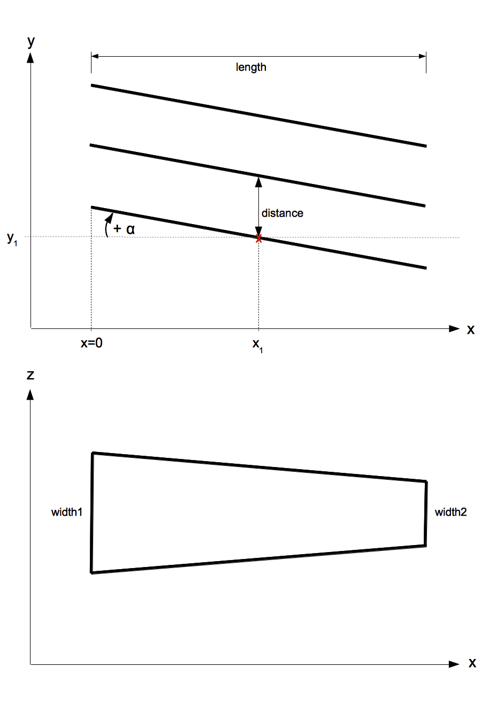
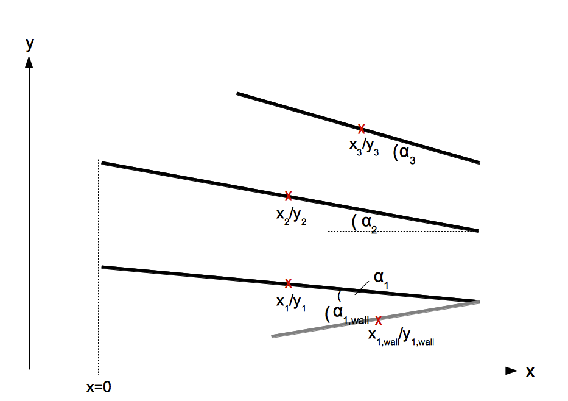
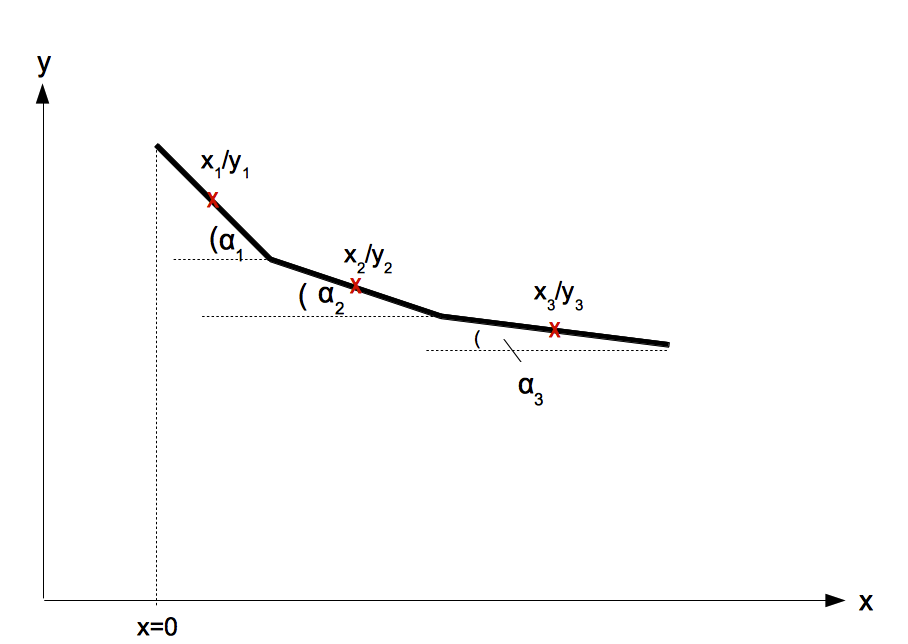

Number of mirrors and walls
Super-mirror coated plates are referred to as mirrors if they allow for transmission,
and as walls if they do not.
Mirror plane
refers to the orientation of the mirror plates: vertical (horizontal) means
the mirror is (approximately) embedded in the x-z (x-y) plane.
Equidistant mirrors of same length and with same inclination?
Yes/No: if yes, only a common length and angle to the x-axis has to be
given, the smallest y or z coordinate (y1 in fig. 1) and the distance between mirrors define
the position of each mirror in the system (see figure 1). In this case, x=0 is
set at the beginning of the mirrors, i.e. guide walls can not
extent to smaller x than mirrors.
If no, a seperate angle, length and position (in x and y or z) has to be given for each
mirror (see fig. 2).
Mirror inclination w.r.t. x-axis
Angle to x-axis, see examples in figures 1-3.
Mirror length
Length of the mirror's projection on x-axis, see fig. 1.
(Smallest) y/z-coordinate
Horizontal (vertical) position of the lowest mirror when viewed in x-y (x-z)
plane (y1 in example of figure 1). Has to be given only for
equidistant mirrors of same length and with same inclination. Otherwise, every
yi (zi) has to be specified (as in figures 2,3).
Mirror coating m
m-value of supermirror coating as integer between 1 and 7 [→
theta_csm=0.00173⋅m,
R_csm(m) as given on http://www.swissneutronics.ch/products/coatings.html].
Are the mirrors rectangular? Mirror width
Yes/No: if yes, only one width (i.e. length in y or z direction) has to
be given. If no, a trapezoidal shape is assumed and width1 and width2 have to be given
seperately, where the former corresponds to the width at lower x position
(i.e. at the entry of the extraction system) as shown in the lower part of
figure 1. All mirrors have the same width1, width2. For guide walls, each
wall has to be assigned a seperate width1, width 2.
Mirror substrate thickness d
Silicon substrate thickness, determines attenuation [silicon assumed → μ*d=0.0048⋅d, μ_incoh*d=0.030⋅d].
|
 |
|
 |
|
 |